In this document we discuss the finite-element-based solution of the Helmholtz equation with the Summerfeld boundary condition, an elliptic PDE that describes time-harmonic wave propagation problems. Compared to the "standard form" of the Helmholtz equation, discussed in another tutorial, the formulation used here allows the imposition of the Sommerfeld radiation condition by means of so-called "perfectly matched layers" (PMLs) as an alternative to classical absorbing/approximate boundary conditions or DtN maps.
We start by reviewing the relevant theory and then present the solution of a simple model problem – the outward propagation of waves from the surface of a cylinder.
Acknowledgement This tutorial and the associated driver codes were developed jointly with Radu Cimpeanu (Imperial College London) |
Theory: The Helmholtz equation for time-harmonic scattering problems
The Helmholtz equation governs time-harmonic solutions of problems governed by the linear wave equation
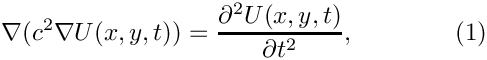
where  is the wavespeed. Assuming that
is the wavespeed. Assuming that  is time-harmonic, with frequency
is time-harmonic, with frequency  , we write the real function as
, we write the real function as
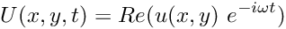
where 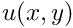 is complex-valued. If the wavespeed is constant this transforms (1) into the standard form of the Helmholtz equation
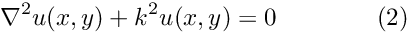
where
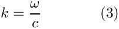
is the wave number. Like other elliptic PDEs the Helmholtz equation admits Dirichlet, Neumann (flux) and Robin boundary conditions.
If the equation is solved in an infinite domain (e.g. in scattering problems) the solution must satisfy the so-called Sommerfeld radiation condition which in 2D has the form
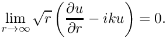
Mathematically, this condition is required to ensure the uniqueness of the solution (and hence the well-posedness of the problem). In a physical context, such as a scattering problem, the condition ensures that scattering of an incoming wave only produces outgoing not incoming waves from infinity.
Discretisation by finite elements
We provide separate storage for the real and imaginary parts of the solution – each Node therefore stores two unknowns values. By default, the real and imaginary parts are stored as values 0 and 1, respectively; see the section The enumeration of the unknowns for details.
The application of Dirichlet and Neumann boundary conditions is straightforward:
- Dirichlet conditions are imposed by pinning the relevant nodal values and setting them to the appropriate prescribed values.
- Neumann (flux) boundary conditions are imposed via
FaceElements(here thePMLHelmholtzFluxElements). As usual we attach these to the faces of the "bulk" elements that are subject to the Neumann boundary conditions.
The imposition of the Sommerfeld radiation condition for problems in infinite domains is slightly more complicated. Another tutorial shows how to impose this condition by means of absorbing/approximate boundary conditions or DtN maps. In the next section we will discuss an alternative approach to this problem by means of perfectly matched layers.
Perfectly matched layers
The idea behind perfectly matched layers is illustrated in the figure below. The actual physical/mathematical problem has to be solved in the infinite domain  (shown on the left), with the Sommerfeld radiation condition ensuring the suitable decay of the solution at large distances from the region of interest (the vicinity of the scatterer, say).
(shown on the left), with the Sommerfeld radiation condition ensuring the suitable decay of the solution at large distances from the region of interest (the vicinity of the scatterer, say).
If computations are performed in a finite computational domain, 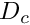 , (shown in the middle), spurious wave reflections are likely to be generated at the artificial boundary  of the computational domain.
of the computational domain.
The idea behind PML methods is to surround the actual computational domain with a layer of "absorbing" material whose properties are chosen such that the outgoing waves are absorbed within it, without creating any artificial reflected waves at the interface between the PML layer and the computational domain.

Our implementation of the perfectly matched layers follows the development in A. Bermudez, L. Hervella-Nieto, A. Prieto, and R. Rodriguez "An optimal perfectly matched layer with unbounded absorbing function for time-harmonic acoustic scattering problems" Journal of Computational Physics 223 469-488 (2007) and we assume the boundaries of the computational domain to be aligned with the coordinate axes, as shown in the sketch above.
The method requires a slight further generalisation of the equations, achieved by introducing the complex coordinate mapping
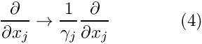
within the perfectly matched layers. This makes the problem anisotropic and in 2D we have
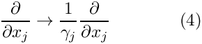
The choice of 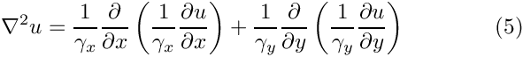 and 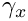 depends on the orientation of the PML layer. Since we are restricting ourselves to axis-aligned mesh boundaries we need to distinguish three different cases, as shown in the sketch below:

- For layers that are aligned with the y axis (such as the left and right PML layers in the sketch) we set
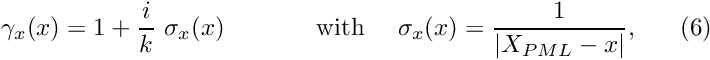
where 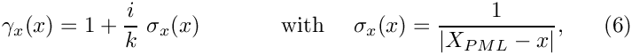 is the x-coordinate of the outer boundary of the PML layer, and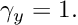
- For layers that are aligned with the x axis (such as the top and bottom PML layers in the sketch) we set
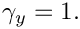
and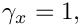
where 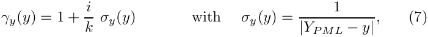 is the y-coordinate of the outer boundary of the PML layer. - In corner regions that are bounded by two axis-aligned PML layers (with outer coordinates and
) we set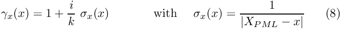
and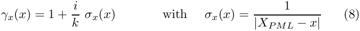
- Finally, in the actual computational domain (outside the PML layers) we set
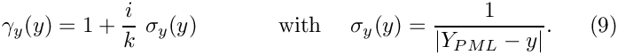
Implementation of the perfectly matched layers within oomph-lib
The finite-element-discretised equations (2) (modified by the PML terms discussed above) are implemented in the PMLHelmholtzEquations<DIM> class which is templated by the spatial dimension, DIM. As usual, we provide fully functional elements by combining these with geometric finite elements (from the Q and T families – corresponding (in 2D) to triangles and quad elements). By default, the PML modifications are disabled, i.e. 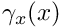 and  are both set to 1.
are both set to 1.
The generation of suitable 2D PML meshes along the axis-aligned boundaries of a given bulk mesh is facilitated by helper functions which automatically erect layers of (quadrilateral) PML elements. The layers are built from QPMLHelmholtzElement<2,NNODE_1D> elements and the parameter NNODE_1D is automatically chosen to match that of the elements in the bulk mesh. The bulk mesh can contain quads or triangles (as shown in the specific example presented below).
For instance, to erect a PML layer (of width width, with n_pml elements across the width of the layer) on the "right" boundary (with boundary ID b_bulk) of the bulk mesh pointed to by bulk_mesh_pt, a call to
returns a pointer to a newly-created mesh that contains the PML elements which are automatically attached to the boundary of the bulk mesh (i.e. the Nodes on the outer boundary of the bulk mesh are shared (pointed to), rather than duplicated, by the elements in the PML mesh). The PML-ness of the elements is automatically enabled, i.e. the functions  and
and  are set as described above. Finally, zero Dirichlet boundary conditions are applied to the real and imaginary parts of the solution on the outer boundary of the PML layer.
are set as described above. Finally, zero Dirichlet boundary conditions are applied to the real and imaginary parts of the solution on the outer boundary of the PML layer.
Similar helper functions exist for PML layers on other axis-aligned boundaries, and for corner PML meshes; see the code listings provided below. Currently, we only provide this functionality for convex 2D computational domains, but the generalisation to non-convex boundaries and 3D is straightforward (if tedious) to implement (Any volunteers?).
A specific example: Outward propagation of acoustic waves from the surface of a cylindrical object
We will now demonstrate the methodology for a specific example: the propagation of axisymmetric waves from the surface of a circular disk. This is a good test case because any deviations from the axisymmetry of the (exact) solution by spurious reflections from the boundaries of the computational domain are easy to detect visually.
The specific domain used in this case can be seen in the figure below. We create an unstructured mesh of six-noded TPMLHelmholtzElements to create the finite computational domain surrounding a circular disk. This is surrounded by four axis-aligned PML layers and four corner meshes (each made of nine-noded QPMLHelmholtzElements).
Results
The figures below show the real part of the solution  radiating from a circular disk with a radius of 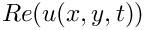 for the case when the non-zero Dirichlet boundary conditions are imposed only on the real part of 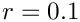 by setting
radiating from a circular disk with a radius of 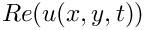 for the case when the non-zero Dirichlet boundary conditions are imposed only on the real part of 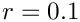 by setting
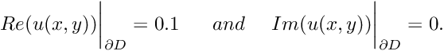

From the two images, one can notice the clean circular solution across the domain. Had the perfectly matched layers not been effective, numerical artifacts would have been observed throughout the domain.
This is demonstrated by the following two figures which show the solution obtained without the PML layers (and "do-nothing" (zero-flux) boundary conditions on the outer boundaries of the computational domain). The spurious reflections from the boundaries completely dominate the solution which bears no resemblance to the exact solution.


The numerical solution
The global namespace
As usual, we define the problem parameters in a global namespace. After non-dimensionalisation, the only parameter is wavenumber, 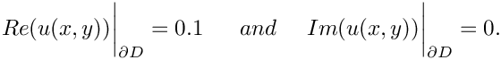.
The driver code
The driver code is very straightforward. We start by building the Problem object, using six-noded triangular generalised Helmholtz elements:
Next we define the output directory.
Finally, we solve the problem and document the results.
The problem class
The problem class is very similar to that employed for the solution of the 2D Helmholtz equation with flux boundary conditions. We provide helper functions to create the PML meshes and to apply the boundary conditions (mainly because these tasks have to be performed repeatedly in the spatially adaptive version this code which is not discussed explicitly here; but see Comments and Exercises ).
The private member data includes pointers the bulk mesh
and to the various PML sub-meshes
The problem constructor
We start by creating the Circle object that defines the inner boundary of the domain.
and define the polygonal outer boundary of the computational domain.
Next we define the curvilinear inner boundary in terms of two TriangleMeshCurviLines which define the hole in the domain:
We specify the mesh parameters (including a target element size)
and build the bulk mesh
We create the PML meshes and add them (and the bulk mesh) to the Problem's collection of sub-meshes and build the global mesh.
Next we pass the problem parameters to all elements (remember that even the elements in the PML layers need to be told about these since they adjust the and functions in terms of these parameters), apply the boundary conditions and assign the equation numbers:
The problem is now ready to be solved.
Applying the boundary conditions
We pin both nodal values (representing the real and imaginary part of the solutions) on the inner boundaries (boundaries 0 and 1; see enumeration of the boundaries in the constructor) and assign the desired boundary values.
Post-processing
The post-processing function doc_solution(...) simply outputs the computed solution.
Comments and Exercises
The enumeration of the unknowns
As discussed in the introduction, most practically relevant solutions of the Helmholtz equation are complex valued. Since oomph-lib's solvers only deal with real (double precision) unknowns, the equations are separated into their real and imaginary parts. In the implementation of the Helmholtz elements, we store the real and imaginary parts of the solution as two separate values at each node. By default, the real and imaginary parts are accessible via Node::value(0) and Node::value(1). However, to facilitate the use of the elements in multi-physics problems we avoid accessing the unknowns directly in this manner but provide the virtual function
which returns a complex number made of the two unsigneds that indicate which nodal value represents the real and imaginary parts of the solution. This function may be overloaded in combined multi-physics elements in which a Helmholtz element is combined (by multiple inheritance) with another element, using the strategy described in the Boussinesq convection tutorial.
PML damping functions
The choice for the absorbing functions in our implementation of the PMLs is not unique. There are alternatives varying in both order and continuity properties. The current form is the result of several feasibility studies and comparisons found in both Bermudez et al. and in the relevant papers on Radu Cimpeanu's webpage. These damping functions produce an acceptable result in most practical situations without further modifications. For very specific applications, alternatives may need to be used and can easily be implemented within the existing framework.
Exercises
Changing perfectly matched layer parameters
Confirm that only a very small number of PML elements (across the thickness of the PML layer) is required to effectively damp the outgoing waves. Furthermore, show that (and try to explain why) PMLs with too many elements may not perform as expected.
A second parameter that can be adjusted is the geometrical thickness of the perfectly matched layers. Relative thin layers layer tend to perform better than thick layers with few elements across their width. Confirm this and try to find an explanation for the phenomenon, given the form of the absorbing functions used in the complex coordinate transformation.
Large wavenumbers
For Helmholtz problems in general, ill-conditioning appears as the wavenumber becomes very large. By altering wavespeed and/or frequency, explore the limitations of both the mesh and the solver in terms of this parameter. Try adjusting the target element size in order to alleviate resolution-related effects. Assess the effectiveness of the perfectly matched layers in high wavenumber problems.
Spatial adaptivity
The driver code discussed above already contains the straightforward modifications required to enable spatial adaptivity. Explore this (by recompiling the code with -DADAPTIVE) and explain why spatial adaptivity is not particularly helpful for the test problem discussed above.
Linear and cubic finite elements
The driver code also contains (commented out) modifications that allow the simulation to be performed with three-node (linear) and ten-node (cubic) triangles. Explore the performance of these elements and confirm that the helper functions correctly create matching (four-node and sixteen-node) quad elements in the PML layers.
Default values for problem parameters
Following our usual convention, we provide default values for problem parameters where this is sensible. For instance, the PML mapping function defaults to the one proposed by Bermudez et al. as this appears to be optimal. Some parameters, such as the wavenumber squared  do need to be set since there are no obvious defaults. If
do need to be set since there are no obvious defaults. If oomph-lib is compiled in PARANOID mode, an error is thrown if the relevant pointers haven't been set. Without paranoia, you get a segmentation fault...
Confirm that this is the case by commenting out the relevant assignments.
Non-convex PML boundaries
As discussed above, we currently provide helper functions to attach PML layers to axis-aligned boundaries of 2D meshes with convex outer boundaries. Essentially, this restricts us to rectangular computational domains. Extend this capability by developing methodologies to
- deal with non-convex domain boundaries. We suggest you create PML meshes for the non-convex corners first, then create the axis-aligned meshes (note that these have to share nodes with the already-created elements that occupy the non-convex corners), and then create the corner meshes for the convex corners (as before). When you're done, let us know – this would be a really useful addition to oomph-lib's machinery. We're happy to help!
- Repeat the same exercise in 3D – somewhat less trivial (so we're even keener for somebody to have a go!)
Source files for this tutorial
- The source files for this tutorial are located in the directory:
demo_drivers/pml_helmholtz/scattering/ - The driver code is:
demo_drivers/pml_helmholtz/scattering/unstructured_two_d_helmholtz.cc
PDF file
A pdf version of this document is available.